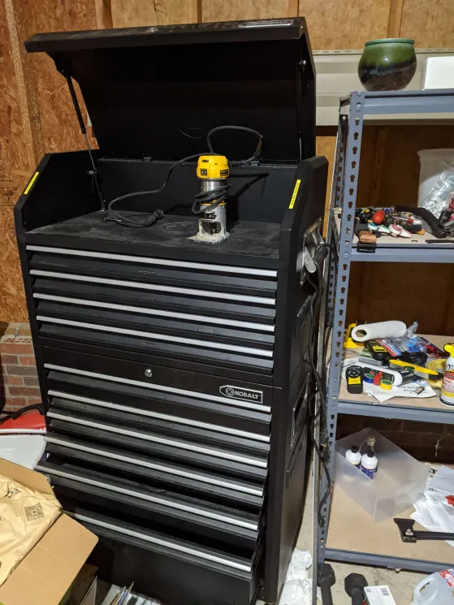
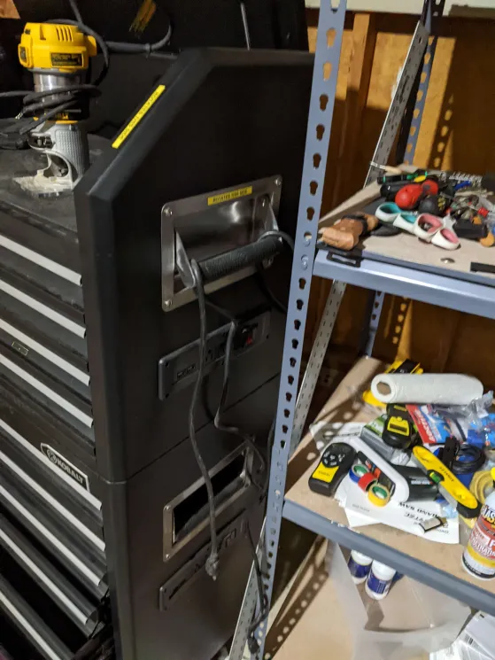
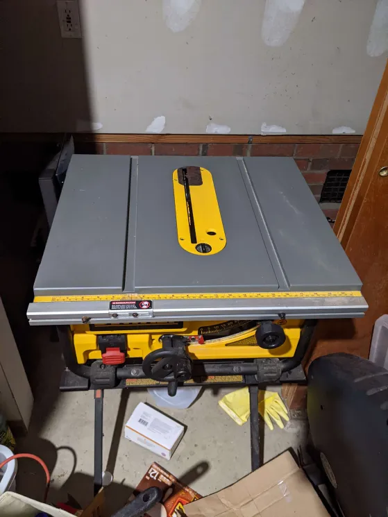
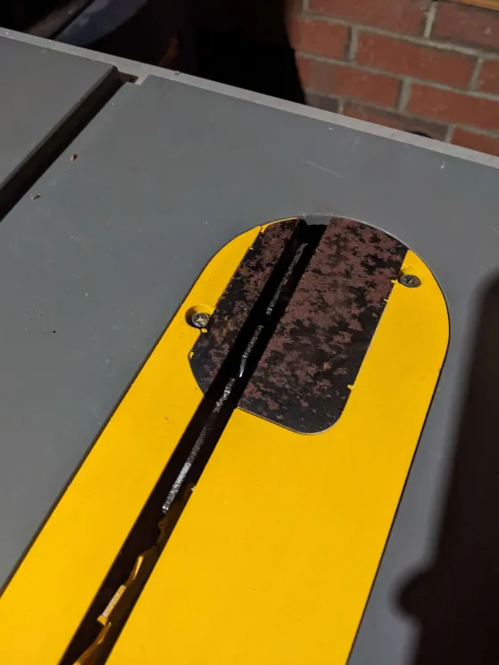
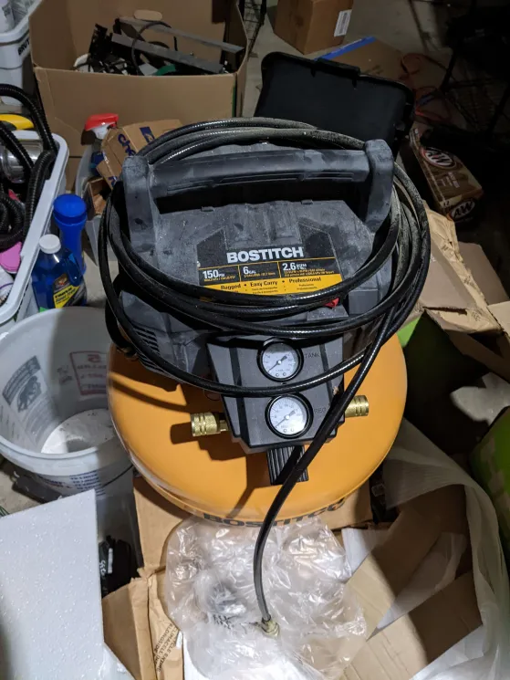
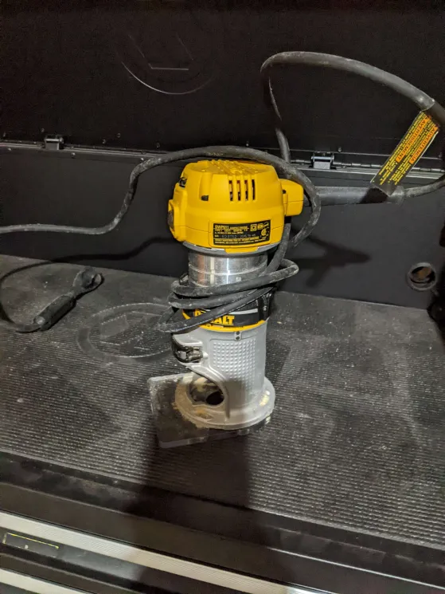
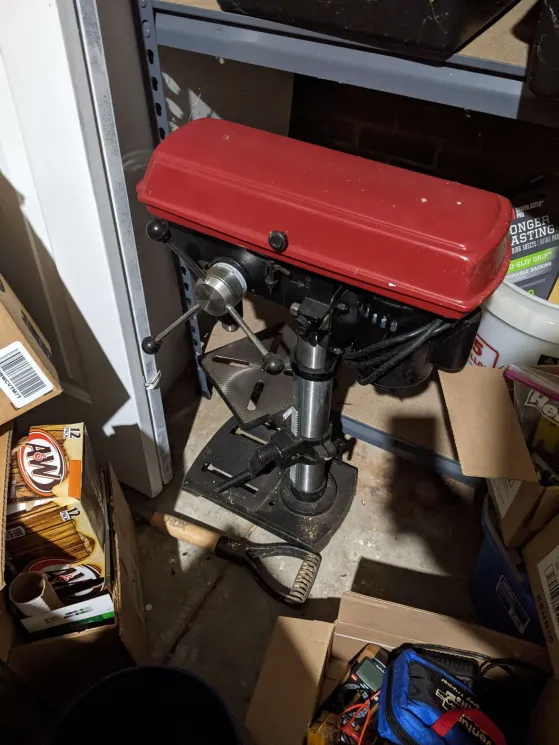
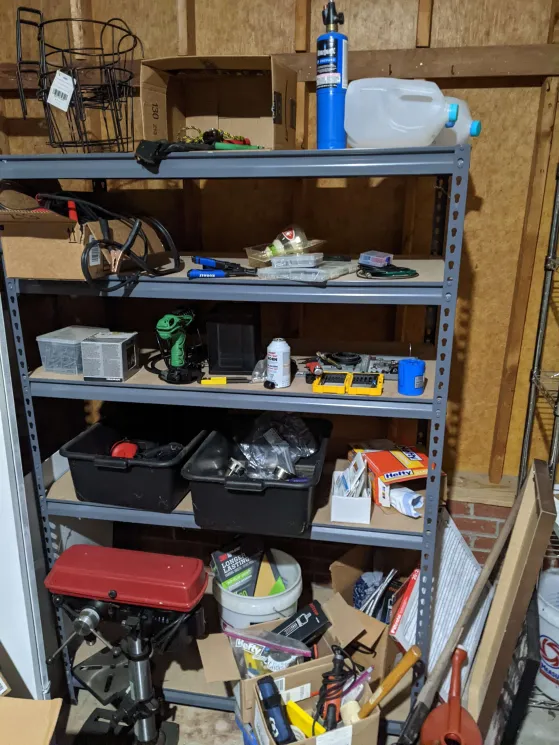

Every item on this list is in either perfect (never actually used) or good condition
(with the exception of the miter saw at the end of the list [and some corrosion on the throat plate of the table saw]).
I bought a lot of this at my old house when I had different plans that I never got around to.
These prices aren't set in stone either.
Kobalt Rolling Chest/Cabinet


(bought from lowes/home depot so no link)
-Locks all drawers (I have the keys).
-Has two power banks on the upper and lower portions on the side.
-Has the nice gas pistons on the upper “trunk” lid.
-Good, locking casters.
-No surface damage, just dusty.
$650
Dewalt Table saw + Stand


(made maybe 7 cuts with it total)
-There is some surface corrosion on the throat plate (2nd pic). I think it's from condensation and a cardboard box that was sitting on it.
-I have the fence as well.
Saw:
https://www.amazon.com/dp/B000HXT2N6
Stand:
https://www.amazon.com/dp/B000J46C18
$250
Bostitch 150psi 6 Gallon Air Compressor + Nail guns & Staple gun

(never used)
https://www.amazon.com/BOSTITCH-BTFP3KIT-3-Tool-Portable-Compressor/dp/B00UHNM60C/ref=sr_1_4
-It has the 3 pneumatic nail/staple guns shown in this Amazon link as well.
$185 for compressor & guns
$150 for just compressor
Dewalt Router

(used twice?)
https://www.amazon.com/DEWALT-DCW600B-Compact-Router-Tool/dp/B07KSRTDML/ref=sr_1_1_mod_primary_new
$60
Band saw + Fence
(In garage closet. Digging it out.)
Saw:
https://www.amazon.com/dp/B00367WB0G
Fence:
https://www.amazon.com/dp/B004JHIXO0
-No-name band saw but solid tool. I think I have some spare saw blades still in the packaging for it too.
$100
Paint Sprayer
(In garage closet. Digging it out.)
(never used)
https://www.amazon.com/dp/B003PGQI48
I was going to paint my old garage but never got around to it.
$80
Skil Drill Press

https://www.amazon.com/5-Speed-Benchtop-Drill-Press-Alignment/dp/B0BFQYZPQK
-Only used it on soft woods and acrylic sheets.
$150
Ryobi Miter Saw
(Damaged!!!)
https://www.amazon.com/dp/B00RF3JXNK
This fell off a table and:
-Broke the safety guard off.
-Knocked the blade angle off center by around 1-2mm.
I still used it for quick cuts and could only ever notice that it was off alignment when cutting something bigger than 7-8 inches (of it’s 10 inch max). I’m pretty sure if you’re willing to pull it apart you can bring the blade angle back to 90 degrees, I just never cared for cutting 2x4s.
$40
Shelves

I've got 4 of these adjustable type shelves.
$25 each